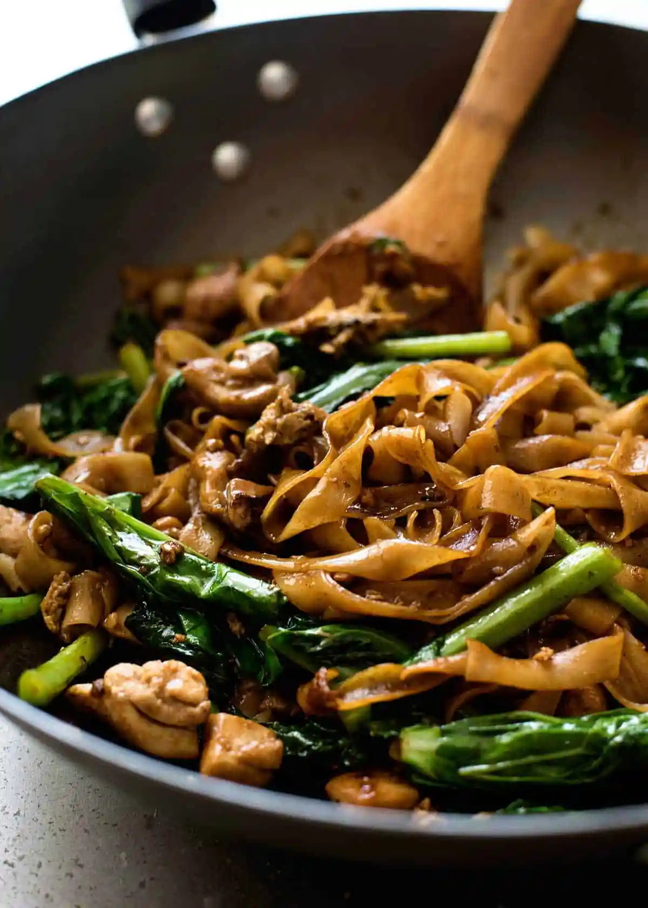

Return Home
Pad See Ew

Ingredients
Noodles
- 7oz dried wide rice noodle sticks
Sauce
- 2 tbsp soy sauce
- 1.5 tbsp oyster sauce
- 2 tsp white vinegar
- 2 tsp sugar
Stir Fry
- 3 tbsp peanut/vegetable oil
- 2 cloves garlic minced
- 8oz ribeye steak
- 1 tbsp corn starch
- 1 tsp baking soda
- 2 eggs
- 5 steams chinese broccoli
Instructions
Prep
- Chinese Broccoli: Trim stems, seperate leaves, cut into 3" pieces.
- Steak: Cut into 1/4" strips and add to bowl. Marinate with 1 tbsp corn starch, 1 tsp baking soda, and 2 tbsp soy sauce.
- Noodles: Prepare according to package directions and drain.
- Sauce: Mix all ingredients until sugar is dissolved.
Cook
- Heat oil:
Add peanut/veggie oil to a large skillet and heat over medium-high heat until shimmering.
- Cook steak: Cook marinated steaks in a single layer until just cooked through. Remove from skillet.
- Cook broccoli stems: Cook broccoli stems in a single layer until they develop a nice char, then start to sautee vigorously.
- Add garlic, noodles, and sauce: Add garlic and stir until fragrant (don't burn it!). Add the noodles and sauce to the skillet and sautee vigorously.
- Scramble egg: When the sauce has thickened up, push everything to one side and add eggs to the open side of the skillet and scramble. Once scrambled, fold them into the rest of the ingredients.
- Add steak and broccoli leaves: Add back steak and accumulated juices and add broccoli leaves. Cook until leaves are just wilted, and kill the heat.
- Toppings (optional): Top with a generous amount of sesame oil and sliced scallions